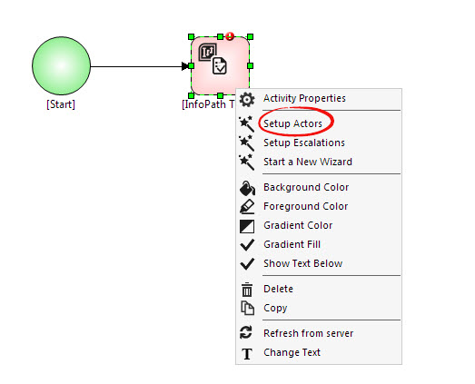
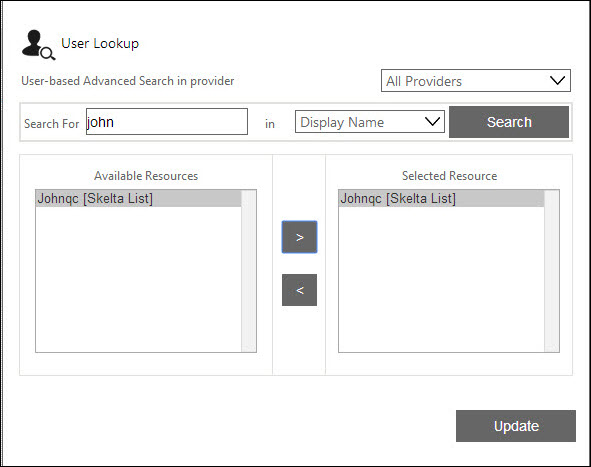
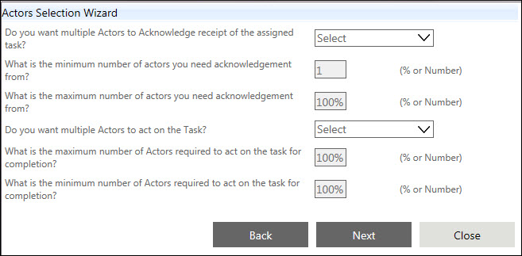

No
The AVEVA Work Tasks Actors Selection Wizard can be used to set the properties related to the actors who will take part in the workflow process. You can access this wizard by selecting the Setup Actors option from the context menu of Human Activities, such as, Approval, Checklist.
The following image shows the wizard to launch the Setup Actors:

Setting the Properties through the Wizard
Step 1: Selecting the Actors
When you right-click a resource action and select the "Actors Selection Wizard" option from the menu, the window shown below, corresponding to the first step of the wizard, is displayed. In this step, the wizard guides you through the selection of resources to set as the actors. You can search for resources by specifying a search parameter. You can specify a value corresponding to user-related parameters like "Employee Name" or "Role in Project" partially or fully in the field provided and click the Search button to start the search. You can change the parameter by selecting from the drop-down here. The resources brought up in the search are displayed in the Available Resources list box. You can add a resource to the Selected Resources list by selecting the resource name in the first list and clicking the [>] button. To add all resources, click the [>>] button. Similarly, you can use the [<] button to remove a resource from the selected resources list or the [<<] button to clear all the selected resources. After selecting the resources, click the Next button to go to the next step in the Actors Selection Wizard.

Step 2: Setting Limits for Actors and Activities
When you click the Next button in the first window of the Actors Selection Wizard, the window shown below is displayed. In this step the wizard guides you through the process of setting limits for the actors and activities through a series of intuitive steps. The first limit to be set is the number of actors who need to acknowledge receipt of the activity. First, specify whether or not multiple actors must acknowledge the activity by selecting "Yes" from the corresponding drop-down. After making the selection, you can set the minimum and maximum number of actors who will have to acknowledge in the next two fields. You can specify either the number of actors or the percentage of the total number of actors. Next, specify whether multiple actors will act on the task by selecting "Yes" from the corresponding drop-down. After making the selection, you can set the maximum and minimum number of actors who will have to act in the next two fields. You can specify either the number of actors or the percentage of the total number of actors. After setting the limits, click Next to go to the next step. If you need to make any changes to the values specified in the previous step, click the Previous button.
The following image shows how to set the limits:

Step 3: Overwriting Values Set through the Action Properties
When you click Next in the second window of the Actors Selection Wizard, the window shown below is displayed. In this step the wizard asks you whether you would like to overwrite the values set through the Action Properties for the activity. If you choose to overwrite the existing values with the new settings, click Finish. This will save the new values and close the wizard. If you prefer not to overwrite the values, you can click Close to exit the wizard. If you need to make any changes to the values specified in the previous step(s), click Previous.